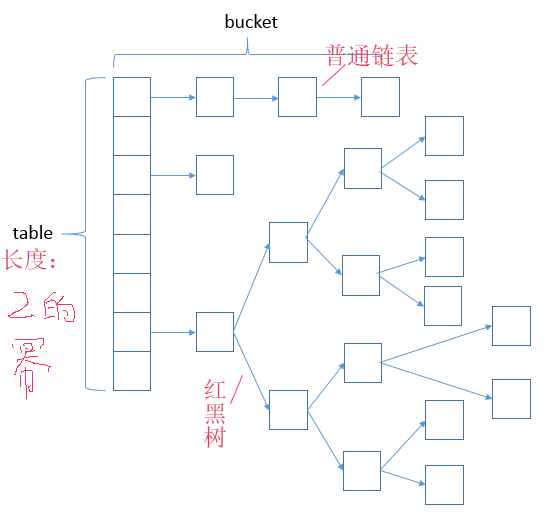

学习自
https://www.cnblogs.com/skywang12345/p/3310835.html
https://blog.csdn.net/unscdf117/article/details/78729674?locationNum=2&fps=1
https://www.cnblogs.com/chengxiao/p/6059914.html
https://blog.csdn.net/jack__frost/article/details/69388422
https://www.cnblogs.com/dennyzhangdd/p/6745282.html
https://blog.csdn.net/fan2012huan/article/details/51097331
备注
本文也是在博览网上诸位前辈们的讲解后自己对比着去理解写下的笔记,很多细节部分可以看上面的链接,下面的内容更多是自己的理解学习过程。
jdk1.8里面的HashMap
jdk1.8版本的HashMap源码实现与上述第一个链接中的源码略有不同,不过大同小异。比如get()以及HashMap的构造函数都有些变化。但是不妨碍我们理解其设计原理。
以get()为例,内部就两行代码:
写法上更简洁了些,而且这里采用了内部类Node。Node是HashMap的一个内部类,实现Map.Entry接口,本质是一个KV映射,下图中每个元素都是一个Node对象。

HashMap顾名思义是通过Hash表进行存储.为了解决哈希碰撞的问题,Java采用这种数组 + 链表方式来进行存储。下面来看看Node这个内部类是干嘛用的：
对比本文开头第一个链接里面的源码,其实就是1.7版本
HashMap里面的内部类Entry,当然,该内部类里面的方法做了些删减。
HashMap既然是用来存储的,那么总得有增加和删除操作吧,具体对应哪个方法呢？
想必用过的人肯定立即能答出,HashMap通过put方法进行增加操作的,当然也有个remove方法进行删除。不过,这时候我却想到了之前学习List集合时貌似用的是add()啊,怎么到这里却是put了。老司机们肯定会说,傻了吧!HashMap实现的是Map,而ArrayList实现的是List,List又继承自Collection,而Map和Collection完全没有关系。
那么,问题来了,HashMap里面的put方法是怎么实现的呢？和ArrayList里面的add有何不同？
那么,看看put方法吧：
直接调了个putVal()然后当个甩手掌柜。那只能继续往下看了：
putVal()一上来就在判断里把table赋值给tab然后对tab进行判断。那么问题又来了,table从哪里来的？何时赋值给它的？
在类中查找,不难发现,table在一开始就定义好。那么是怎么给它赋值的呢？比如:
这个时候,我需要去研究HashMap的构造函数了。HashMap有四个构造函数,我就不一一贴出来了。这里我调用的其实是无参构造函数,仅仅是将loadFactor赋值为0.75f。至于为什么是0.75f,第一个链接里面的博客讲到：默认加载因子是 0.75, 这是在时间和空间成本上寻求一种折衷。加载因子过高虽然减少了空间开销，但同时也增加了查询成本。
研究完构造函数,我发现上面例子并没有对table进行赋值,那么第一个判断为true,执行tab = resize()。那么resize()又是什么呢？看看吧：
- 由于我所举的例子,先实例化一个
HashMap对象然后put了一个值,所以,一开始table是null,oldCap == 0,由于也没有对threshold进行赋值,所以初始值也是0. - 在我举的例子基础上,那些
if判断都不满足条件,只能走else块。得到newCap和newThr的值。 - 对
threshold进行赋值,然后新建一个长度为16的数组,并将其赋值给table。 - 由于我的例子初始化时,
oldTab == null,所以第一次put时并不会走下面的代码。 - 当我以后进行第二次甚至更多的
put操作时,才会继续。接下来的代码看不懂,可以直接看开头第四个链接的博客。
看完代码仔细想想,应该明白这里的resize()其实是用来实现数组自增扩容的。
到了这里,数组扩容完成,开始继续执行
putVal()里面的代码。由于是第一次put,直接在第二个if判断里通过tab[i] = newNode(hash, key, value, null)添加新内容。
以上分析的前提建立在实例化一个HashMap后第一次put,所以分析起来比较简单。如果是第二次及以上不断put,那么就会略微繁琐点。
此外,需要格外注意的是,
- 由于
HashMap是通过p = tab[i = (n - 1) & hash]得到每对key-value,而其中的i = (n - 1) & hash是通过hash值得到的位置下标,并不是常规数组那样从0开始依次排序的,所以HashMap是无序的！ putVal()里面else代码块里还真的看不懂是什么意思,可以去看开头第四个链接的博客。不过可以肯定的是,putVal()将key-value对放进HashMap中,无论是直接调用newNode()亦或是else代码块里的写入覆盖,该方法均不安全。如果两个线程同时对同一处的HashMap进行调用,那么会引发错误,所以HashMap是非线程安全的。
总结
目前以我的技术实力,还无法全面清晰的理解HashMap的每个实现原理,以上只能管中窥豹了,文章开头给出的链接写得都非常好。
以下给出几个重要的知识点：
- 我们对某个元素进行哈希运算,得到一个存储地址,然后要进行插入的时候,发现已经被其他元素占用了,其实这就是所谓的哈希冲突,也叫哈希碰撞。
- 1.8版本的
HashMap采用了数组 + 链表 + 红黑树的结构来解决哈希冲突。当同一个hash值的链表节点数不小于8时,将不再以单链表的形式存储了,会被调整成一颗红黑树。 HashMap的数组长度一定是2的次幂。初始长度是16.
问题
1.为什么HashMap的初始长度是16？为什么必须是2的幂？着重看文章开头的第3个链接以及https://blog.csdn.net/super_me_jason/article/details/79726757
我们知道对于HashMap的table而言,数据分布需要均匀(最好每项都只有一个元素,这样就可以直接找到),不能太紧也不能太松,太紧会导致查询速度慢,太松则浪费空间。计算hash值后,怎么才能保证table元素分布均与呢？我们会想到取模,但是由于取模的消耗较大,HashMap以前是这样处理的：调用indexFor方法,返回的是key的hashcode跟初始容量-1做与运算。但是1.8版本后直接在resize()里面通过这一段代码实现：
hashMap的数组长度一定保持2的次幂,比如16的二进制表示为 10000,那么n-1就是15,二进制为01111,同理扩容后的数组长度为32,二进制表示为100000,n-1为31,二进制表示为011111。这样会保证低位全为1,而扩容后只有一位差异,也就是多出了最左位的1,这样在通过 i = (n - 1) & hash的时候,只要hash对应的最左边的那一个差异位为0,就能保证得到的新的数组索引和老数组索引一致(大大减少了之前已经散列良好的老数组的数据位置重新调换)。数组长度保持2的次幂,n-1的低位都为1,会使得获得的数组索引更加均匀。
HashMap的默认长度为16,是为了降低hash碰撞的几率。举个例子,计算”book”的hashcode,假设HashMap的长度是10:
从结果可以看出,虽然hashcode变化了,但是运算的结果都是1001,也就是说,当HashMap长度为10的时候,有些index结果的出现几率会更大而有些index结果永远不会出现(比如0111),这样就不符合hash均匀分布的原则。
反观长度16或者其他2的幂,length - 1的值是所有二进制位全为1,这种情况下,index的结果等同于hashcode后几位的值只要输入的hashcode本身分布均匀,hash算法的结果就是均匀的。
2.为什么HashMap的动态因子是0.75f？
HashMap有两个参数影响其性能：初始容量和加载因子。容量是哈希表中桶的数量,初始容量只是哈希表在创建时的容量。加载因子是哈希表在其容量自动扩容之前可以达到多满的一种度量。当哈希表中的条目数超出了加载因子与当前容量的乘积时,则要对该哈希表进行扩容、rehash操作(即重建内部数据结构),扩容后的哈希表将具有两倍的原容量。
通常,加载因子需要在时间和空间成本上寻求一种折衷。加载因子过高,例如为1,虽然减少了空间开销,提高了空间利用率,但同时也增加了查询时间成本；加载因子过低,例如0.5,虽然可以减少查询时间成本,但是空间利用率很低,同时提高了rehash操作的次数。在设置初始容量时应该考虑到映射中所需的条目数及其加载因子,以便最大限度地减少rehash操作次数,所以,一般在使用HashMap时建议根据预估值设置初始容量,减少扩容操作。
选择0.75作为默认的加载因子,完全是时间和空间成本上寻求的一种折衷选择,至于为什么不选择0.5或0.8,笔者没有找到官方的直接说明,在HashMap的源码注释中也只是说是一种折中的选择。
3.为什么HashMap的同一个hash值的链表节点数不小于8时调整为红黑树？为什么一定是8而不是其他的值？
关于这个问题,源码中有注释讲到,翻译过来：理想情况下使用随机的哈希码,容器中节点分布在hash桶中的频率遵循泊松分布(具体可以查看http://en.wikipedia.org/wiki/Poisson_distribution) ,按照泊松分布的计算公式计算出了桶中元素个数和概率的对照表,可以看到链表中元素个数为8时的概率已经非常小,再多的就更少了,所以原作者在选择链表元素个数时选择了8,是根据概率统计而选择的。
4.HashMap中保存了key-value,而entrySet也是保存了key-value对,这有什么意义呢？两个有何不同呢？
先看个例子：
从上例中可以看出两者确实不大一样。调用了entrySet()后打印输出的有点类似js里面的数组形式。看了下源码,发现entrySet()是Set类型的,而Set又继承自Collection,HashMap实现的是Map接口,Map与Collection本就是两种接口,并没有什么联系。
看了网上的讲解以及源码发现,1.8版本的HashMap调用entrySet()后会new一个EntrySet内部类的实例,而调用entrySet().iterator()方法会new一个内部类EntryIterator的实例,而该类又继承自HashIterator内部类且只定义了一个next()方法。关键点就在HashIterator类内部。该类内部的nextNode()其实就是对HashMap底层的数据存储结构Node<K,V>[] table进行遍历,所以采用entrySet().iterator()遍历的话效率更高。原因：keySet方式拿到的是装载String的set(需要再次转换拿到key),而entrySet方式拿到的是装载Map.Entry类型的set,无须再次转换,直接getvalue。